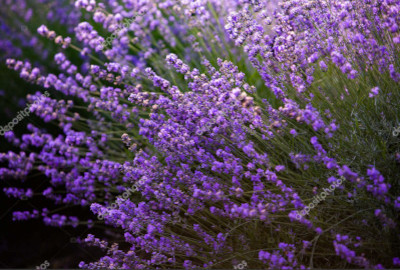
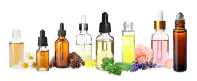

Aromaterapia
O que é Aromaterapia ?
A Aromaterapia consiste num ramo da Fitoterapia que utiliza óleos essenciais como base de seu tratamento.
Os mais antigos relatos acerca do emprego de produtos naturais no tratamento de enfermidades estão presentes, há mais de 2000 anos a.C..
O termo surgiu pelo químico francês René Maurice Gatefossé em 1928, para ele a palavra Aromaterapia significava uma terapia através dos aromas dos óleos essenciais, trata-se de uma prática natural não invasiva, aplicada não para atuar apenas no sintoma ou na doença, mas também para manter o equilíbrio natural do organismo como um todo, pelo correto uso dos óleos essênciais.
Plantas Aromáticas
As plantas aromáticas destacam-se pela sua prática terapêutica milenar e seu cheiro singular.
Dentre as variadas atividades biológicas dessas ervas, destacam-se ações: antiviral, anticarcinogénica, antibacteriana, antioxidante, antifúngica, colérica, hepatoprotetora, larvicida e/ou repelente e enzimática estimulante.
Óleos Essenciais
As características presentes nos óleos essenciais são os seus aromas fortes exatamente iguais ao da planta de origem, a pureza, onde não deve conter nenhum solvente ou qualquer outra substância química, devem ser extremamente naturais, de consistências oleosas e voláteis, ou seja, evaporam à temperatura ambiente. Uma única gota equivale a 30 xícaras de chá da mesma.
